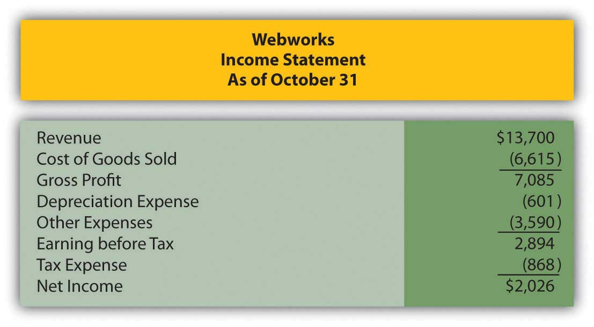

Which of the following would not be subject to amortization?
Mitchell Inc. developed a product, spending $4,900,000 in research to do so. Mitchell applied for and received a patent for the product in January, spending $34,800 in legal and filing fees. The patent is valid for seventeen years. What would be the book value of the patent at the end of Year 1?
Kremlin Company pays $2,900,000 for the common stock of Reticular Corporation. Reticular has assets on the balance sheet with a book value of $1,500,000 and a fair value of $2,500,000. What is goodwill in this purchase?
What is the present value of receiving $4,800,000 at the end of six years assuming an interest rate of 5 percent?
Which of the following concerning the research and development costs is true?
Krypton Corporation offers Earth Company $800,000 for a patent held by Earth Company. The patent is currently on Earth Company’s books in the amount of $14,000, the legal costs of registering the patent in the first place. Krypton had appraisers examine the patent before making an offer to purchase it, and the experts determined that it could be worth anywhere from $459,000 to $1,090,000. If the purchase falls through, at what amount should Earth Company now report the patent?
What is the present value of receiving $15,000 per year for the next six years at an interest rate of 7 percent, assuming payments are made at the beginning of the period (annuity due)?
At the beginning of the year, Jaguar Corporation purchased a license from Angel Corporation that gives Jaguar the right to use a process Angel created. The purchase price of the license was $1,500,000, including legal fees. Jaguar will be able to use the process for five years under the license agreement.
Yolanda Company created a product for which it was able to obtain a patent. Yolanda sold the patent to Christiana Inc. for $20,780,000 at the beginning of 20X4. Christiana paid an additional $200,000 in legal fees to properly record the patent. At the beginning of 20X4, Christiana determined that the patent had a remaining life of seven years.
Star Corporation purchases Trek Inc. for $71,660,000. Star Corporation is gaining the following assets and liabilities:
| Value on Trek’s Books | Current Market Value | |
|---|---|---|
| Inventory | $456,000 | $456,000 |
| Land | $1,050,000 | $50,000,000 |
| Trademarks | $64,000 | $20,004,000 |
| Patent | $15,000 | $1,850,000 |
| Accounts Payable | $650,000 | $650,000 |
Prepare the journal entry for Star to record the purchase of Trek.
Assume the same facts as in problem 3 above, but assume that Star pays $100,000,000 for Trek.
Calculate the present value of each of the following amounts at the given criteria and then answer the questions that follow:
| Future Cash Flow | Interest Rate | Number of Periods | Present Value |
|---|---|---|---|
| $400,000 | 4% | 7 years | |
| $400,000 | 6% | 7 years | |
| $400,000 | 4% | 12 years | |
| $400,000 | 6% | 12 years |
On 1/1/X6 Fred Corporation purchases a patent from Barney Company for $10,000,000, payable at the end of three years. The patent itself has an expected life of ten years. No interest rate is stated, but Fred could borrow that amount from a bank at 6 percent interest.
Calculate the present value of each of the following amounts at the given criteria. Assume that the payment is made at the beginning of the period (annuity due).
| Payment per Period | Interest Rate | Number of Periods | Present Value |
|---|---|---|---|
| $30,000 | 5% | 8 years | |
| $60,000 | 4% | 7 years | |
| $25,000 | 8% | 10 years | |
| $56,000 | 6% | 4 years |
Highlight Company purchases the right to use a certain piece of music from the musician. It hopes to make this its “signature song” so it will be a long-term relationship, the contract stating five years. The agreed upon price is $750,000, with no stated interest rate. Highlight could borrow money at 5 percent interest currently. The arrangement states that Highlight will make a down payment on 1/1/X2 of $150,000, and pay $150,000 at the beginning of the following four years, making this an annuity due.
This problem will carry through several chapters, building in difficulty. It allows students to continuously practice skills and knowledge learned in previous chapters.
In Chapter 10 "In a Set of Financial Statements, What Information Is Conveyed about Property and Equipment?", you prepared Webworks statements for October. They are included here as a starting point for November.
Figure 11.12 Webworks Financial Statements
Figure 11.13

Figure 11.14

The following events occur during November:
a. Webworks starts and completes eight more Web sites and bills clients for $4,600.
b. Webworks purchases supplies worth $80 on account.
c. At the beginning of November, Webworks had nine keyboards costing $110 each and forty flash drives costing $12 each. Webworks uses periodic FIFO to cost its inventory.
d. On account, Webworks purchases sixty keyboards for $111 each and ninety flash drives for $13 each.
e. Webworks pays Nancy $800 for her work during the first three weeks of October.
f. Webworks sells 60 keyboards for $9,000 and 120 flash drives for $2,400 cash.
g. A local realtor pays $400 in advance for a Web site. It will not be completed until December.
h. Leon read about a new program that could enhance the Web sites Webworks is developing for clients. He decides to purchase a license to be able to use the program for one year by paying $2,400 cash. This is called a “license agreement” and is an intangible asset.
i. Webworks collects $4,200 in accounts receivable.
j. Webworks pays off its salaries payable from November.
k. Webworks pays off $9,000 of its accounts payable.
l. Webworks pays Leon a salary of $2,000.
m. Webworks wrote off an uncollectible account in the amount of $100.
n. Webworks pays taxes of $1,135 in cash.
Required:
A. Prepare journal entries for the above events.
B. Post the journal entries to T-accounts.
C. Prepare an unadjusted trial balance for Webworks for November.
D. Prepare adjusting entries for the following and post them to your T-accounts.
o. Webworks owes Nancy $150 for her work during the last week of November.
p. Leon’s parents let him know that Webworks owes $290 toward the electricity bill. Webworks will pay them in December.
q. Webworks determines that it has $20 worth of supplies remaining at the end of November.
r. Prepaid rent should be adjusted for November’s portion.
s. Webworks is continuing to accrue bad debts at 10 percent of accounts receivable.
t. Webworks continues to depreciate its equipment over four years and its furniture over five years, using the straight-line method.
u. The license agreement should be amortized over its one-year life.
v. Record cost of goods sold.
E. Prepare an adjusted trial balance.
F. Prepare financial statements for November.